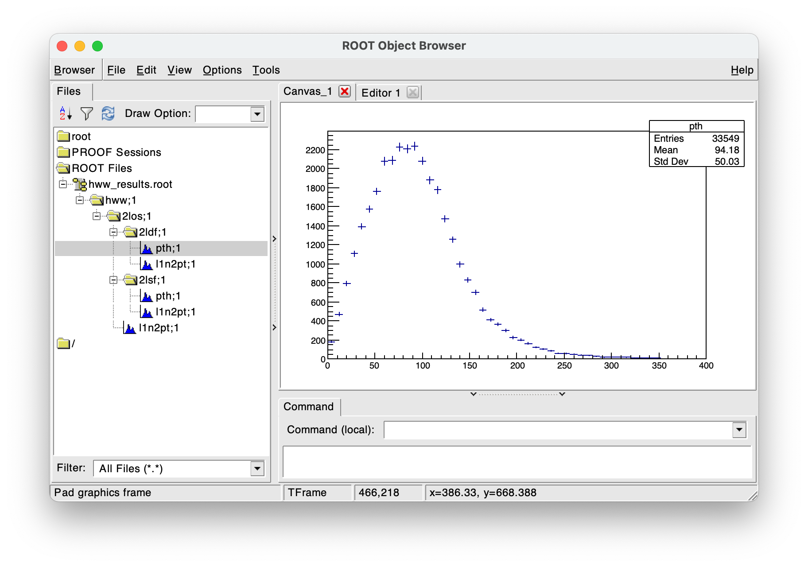
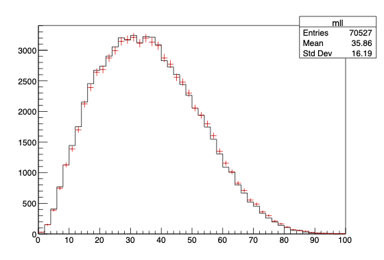

Higgs boson analysis
Overview
This demo analyzes physics collision in simulated \(H\rightarrow WW^{\ast}\rightarrow \ell\nu\ell\nu\) events.
- The public dataset is available at CERN Open Data Portal.
- The implementation of CERN ROOT Framework for queryosity is provided by AnalysisPlugins.
The following tasks will be performed:
- Apply the MC event weight.
- Select entries for which there are exactly two opposite-sign leptons in the event.
- Form a (2, 2) matrix of cut regions:
- The leptons are same-/different-flavour.
- The dilepton invariant mass is less/greater than 60 GeV.
- In each case, plot the distribution of the dilepton+MET transverse momentum.
Nominal
Setup
using dataflow = queryosity::dataflow;
auto df = dataflow();
auto tree_files = std::vector<std::string>{"hww.root"};
auto tree_name = "mini";
auto ds = df.open<Tree>(tree_files, tree_name);
Read out columns
// std::vector-like containers types with useful array actions
using VecUI = ROOT::RVec<unsigned int>;
using VecF = ROOT::RVec<float>;
using VecD = ROOT::RVec<double>;
// event weights
auto mc_weight = ds.read<float>("mcWeight");
// scale factors
auto [el_sf, mu_sf] = ds.read<float,float>({"scaleFactor_ELE","scaleFactor_MUON"});
// lepton quantities
auto [
lep_pt_MeV,
lep_eta,
lep_phi,
lep_E_MeV,
lep_Q,
lep_type
] = ds.read<
VecF,
VecF,
VecF,
VecF,
VecF,
VecUI>({
"lep_pt",
"lep_eta",
"lep_phi",
"lep_E",
"lep_charge",
"lep_type"
});
// MET quantities
auto [met_MeV, met_phi] = ds.read<float,float>({"met_et","met_phi"});
Convert from MeV to GeV
auto MeV = ana.constant(1000.0);
auto lep_pt = lep_pt_MeV / MeV;
auto lep_E = lep_pt_MeV / MeV;
auto met = met_MeV / MeV;
Select leptons within acceptance
auto lep_eta_max = df.constant(2.4);
auto lep_pt_sel = lep_pt[ lep_eta < lep_eta_max && lep_eta > (-lep_eta_max) ];
Compute dilepton+MET transverse momentum
auto p4l1 = df.define<NthP4>(0)(lep_pt_sel, lep_eta_sel, lep_phi_sel, lep_E_sel);
auto p4l2 = df.define<NthP4>(1)(lep_pt_sel, lep_eta_sel, lep_phi_sel, lep_E_sel);
auto p4ll = p4l1+p4l2;
using P4 = TLorentzVector;
auto mll = df.define([](const P4& p4){return p4.M();})(p4ll);
auto pth = df.define(
[](const P4& p4, float q, float q_phi) {
TVector2 p2; p2.SetMagPhi(p4.Pt(), p4.Phi());
TVector2 q2; q2.SetMagPhi(q, q_phi);
return (p2+q2).Mod();
})(p4ll, met, met_phi);
Apply selections
auto n_lep_sel = df.define([](VecF const& lep){return lep.size();})(lep_pt_sel);
auto n_lep_req = df.constant<unsigned int>(2);
// apply event weight and require exactly two leptons
auto cut_2l = df.weight("weight")(mc_weight * el_sf * mu_sf)\
.filter("2l")(n_lep_sel == n_lep_req);
// opposite-sign
auto cut_2los = cut_2l.filter("2los", [](const VecI& lep_charge){return lep_charge.at(0)+lep_charge.at(1)==0;})(lep_Q);
// opposite-sign+different-flavour
auto cut_2ldf = cut_2los.channel<cut>("2ldf", [](const VecUI& lep_type){return lep_type.at(0)+lep_type.at(1)==24;})(lep_type);
// opposite-sign+same-flavour
auto cut_2lsf = cut_2los.channel<cut>("2lsf", [](const VecUI& lep_type){return (lep_type.at(0)+lep_type.at(1)==22)||(lep_type.at(0)+lep_type.at(1)==26);})(lep_type);
// same cuts at different branches
auto mll_cut = df.constant(60.0);
auto cut_2ldf_sr = cut_2ldf.filter("sr")(mll < mll_cut); // path = "2ldf/sr"
auto cut_2lsf_sr = cut_2lsf.filter("sr")(mll < mll_cut); // path = "2lsf/sr"
auto cut_2ldf_wwcr = cut_2ldf.filter("wwcr")(mll > mll_cut); // path = "2ldf/cr"
auto cut_2lsf_wwcr = cut_2lsf.filter("wwcr")(mll > mll_cut); // path = "2lsf/cr"
Book histograms
// Hist<1,float> is user-implemented.
auto pth_hist = df.get<Hist<1,float>>("pth",100,0,400).fill(pth).at(cut_2los);
// also at "2ldf/wwcr", "2lsf/wwcr"
auto l1n2_pt_hists_wwcrs = l1n2_pt_hist.at(cut_2lsf_sr, cut_2lsf_wwcr);
(Optional) Dump out results
// booked at multiple selections
auto pth_hists = df.get<Hist<1,float>>("pth",100,0,400).fill(pth).at(cut_2los, cut_2ldf, cut_2lsf);
// want to write histogram at each selection, using its path as sub-folders
auto out_file = TFile::Open("hww_hists.root","recreate");
// Folder is user-implemented
queryosity::plan::dump<Folder>(pth_hists, out_file, "hww");
delete out_file;

Systematic variations
Vary columns
// use a different scale factor (electron vs. pileup...? purely for illustration)
auto el_sf = ds.read<float>("scaleFactor_ELE").vary("sf_var","scaleFactor_PILEUP");
// change the energy scale by +/-2%
auto Escale = df.define([](VecD E){return E;}).vary("lp4_up",[](VecD E){return E*1.02;}).vary("lp4_dn",[](VecD E){return E*0.98;});
auto lep_pt_sel = Escale(lep_pt)[ lep_eta < lep_eta_max && lep_eta > (-lep_eta_max) ];
auto lep_E_sel = Escale(lep_E)[ lep_eta < lep_eta_max && lep_eta > (-lep_eta_max) ];
Everything else is the same...
auto p4l1 = df.define<NthP4>(0)(lep_pt, lep_eta, lep_phi, lep_E);
auto p4l2 = df.define<NthP4>(1)(lep_pt, lep_eta, lep_phi, lep_E);
p4l1.has_variation("lp4_up"); // true
p4l1.has_variation("sf_var"); // false
// ...
auto cut_2l = df.weight("weight")(mc_weight * el_sf * mu_sf)\
.filter("2l")(n_lep_sel == n_lep_req);
cut_2l.has_variation("lp4_up"); // true
cut_2l.has_variation("sf_var"); // true
// ...
auto mll_vars = df.get<Hist<1,float>>("mll",50,0,100).fill(mll).at(cut_2los);
mll_vars.has_variation("lp4_up"); // true : mll & cut_2los varied
mll_vars.has_variation("sf_var"); // true : mll nominal & cut_2los varied

Booking multiple selections and variations at once
// mll contains variations = {lp4_up, sf_var}
// booked at selections = {cut_2ldf, cut_2lsf}
auto mll_channels_vars = df.get<Hist<1,float>>("mll",50,0,200).fill(mll).at(cut_2ldf, cut_2lsf);
// specify variation name, followed by selection path
mll_channels_vars.nominal()["2ldf"]->GetEntries();
mll_channels_vars["lp4_up"]["2lsf"]->GetEntries();